Next: Dipole Approximation Up: Application to Neutron scattering Previous: Coherent Nuclear Inelastic Scattering Contents Index
Similar, the magnetic inelastic scattering is given by
The total magnetic cross section is
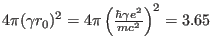 barn.
In (265) the first term in the bracket corresponds to the total and the second term to the elastic
scattering.
If we split the index  into basis and
lattice part
into basis and
lattice part
 and
compare equation (238), we see that
the scattering function depends on the correlation function between the magnetisation operator
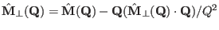, which is the observable in the case of magnetic neutron scattering
(
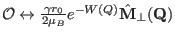).
and
compare equation (238), we see that
the scattering function depends on the correlation function between the magnetisation operator
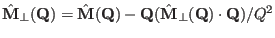, which is the observable in the case of magnetic neutron scattering
(
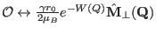).
 is the Debye-Waller
factor of the atom number
is the Debye-Waller
factor of the atom number  in the magnetic unit cell30.
in the magnetic unit cell30.  denotes the number of magnetic
atoms in the magnetic unit cell.
Therefore, if the generalised eigenvalue problem (235) for the dynamical matrix
has been solved, the magnetic neutron scattering function can
be evaluated with the help of equations (239) and (247):
denotes the number of magnetic
atoms in the magnetic unit cell.
Therefore, if the generalised eigenvalue problem (235) for the dynamical matrix
has been solved, the magnetic neutron scattering function can
be evaluated with the help of equations (239) and (247):
Once the eigenvectors
 of the system have been determined, this expression can be
evaluated.
mcdisp evaluates for every mode the expression (267) with exception
of the
of the system have been determined, this expression can be
evaluated.
mcdisp evaluates for every mode the expression (267) with exception
of the  -function and multiplies it by
-function and multiplies it by  in order to get the nuclear Intensity
in order to get the nuclear Intensity  in
barns/meV formula unit. In addition, the components of the magnetic scattering function
can be output (to be used to interpret
polarised magnetic neutron scattering).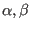 then refer to either the xyz coordinate system
(
in
barns/meV formula unit. In addition, the components of the magnetic scattering function
can be output (to be used to interpret
polarised magnetic neutron scattering).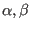 then refer to either the xyz coordinate system
( ,
,
 and
and  perpendicular to
perpendicular to  and
and  )
or the uvw coordinate system
(
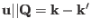, perpendicular to the scattering plane (as determined by the cross product of
subsequent vectors in the input q-vector list of mcdisp)
and perpendicular to and , such that uvw for a righthanded system).
)
or the uvw coordinate system
(
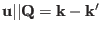, perpendicular to the scattering plane (as determined by the cross product of
subsequent vectors in the input q-vector list of mcdisp)
and perpendicular to and , such that uvw for a righthanded system).
Form factor effects on the scattering intensity are
due to the  -dependence of the magnetisation operator, which means that
the transformation matrices
-dependence of the magnetisation operator, which means that
the transformation matrices
 and the eigenvalues
and the eigenvalues  are also
are also
 -dependent. These quantities have
to be calculated by evaluating the transition
matrix elements31
of
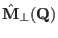 for every
scattering vector
-dependent. These quantities have
to be calculated by evaluating the transition
matrix elements31
of
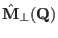 for every
scattering vector  and diagonalising the matrix (243)
with
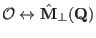.
For small
and diagonalising the matrix (243)
with
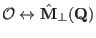.
For small  this procedure can be simplified by using the dipole approximation,
which is described below.
this procedure can be simplified by using the dipole approximation,
which is described below.